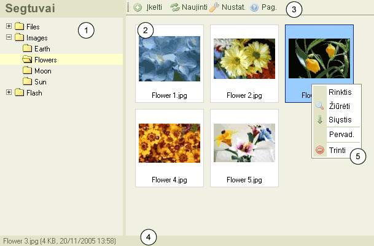

CKFinder vartotojo s膮saja
CKFinder s膮saja buvo sukurta paprastam, 拧variam, suprantamam ir paprastam valdymui.
Dauguma savybi懦 yra valdomos keliais pel臈s paspaudimai ir per kontekstinius meniu.
沤emiau yra CKFinder atvaizdas:

- Segtuv懦 valdymas: susideda i拧 "i拧si拧akojan膷io meniu" segtuv懦
po kuriuos galima nar拧yti. Segtuv懦 pagalba yra lengviau organizuoti failus.
- Fail懦 valdymas: rodomi visi failai esan膷iame segtuve.
- 漠anki懦 juosta: eil臈 mygtuk懦 kuriuos nuspaudus yra 寞vykdomos
tam tikros funkcijos.
- B奴senos juosta: tai vieta kurioje rodoma informacija apie
pasirinkt膮 fail膮, j懦 kiekis segtuve ir t.t
- Kontekstinis meniu: eil臈 mygtuk懦 kurie gali b奴ti naudojami paleisti
tam tikroms operacijoms pasirinktam objektui. Galimi pasirinkimai dinami拧kai kei膷iasi
priklausomai nuo to, koks objektas pasirinktas.